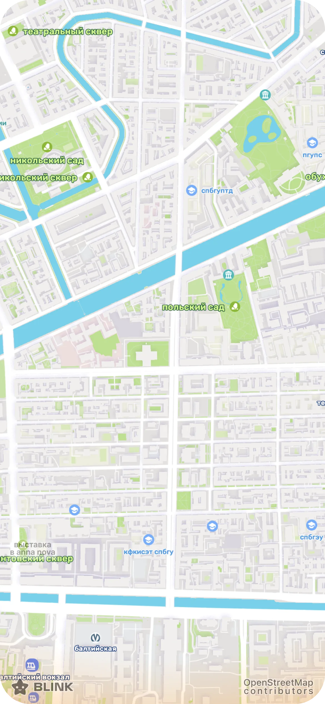

шеринг геопозиции
наташка делится геопозицией с другом, у которого нет blink
ты · приложение blink





время
что может пойти не так
друг · браузер, blink не установлен
здесь откроется ссылка, когда наташка ей поделится
трансляция закончилась
ссылка больше не работает
время вышло или трансляцию остановили. попроси друга поделиться снова